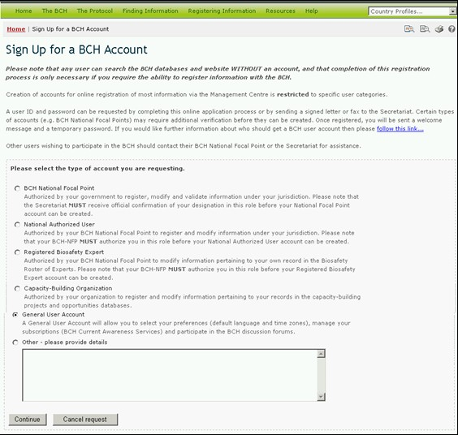

La Liste de diffusion fournit l’accès aux listservs disponibles à travers le Portail Central du CEPRB. Les listservs sont des listes d’adresses électroniques pour des personnes qui se sont inscrites pour recevoir, régulièrement, des informations sur un sujet particulier.
Le Service d’Actualité du CEPRB envoie des mises à jour régulières résumant de nouvelles informations qui ont été ajoutées au CEPRB. Tout en étant envoyées directement aux utilisateurs par courriel il est également possible de recevoir des mises à jour par fax (prière de contacter le Secrétariat pour mettre votrenuméro de fax sur la liste de ce service).
Les catégories d’information comprises dans les résumés d’actualités courantes, ainsi que la fréquence de leur distribution, peuvent être personnalisées par chaque utilisateur.
Le Mises à jour des Spécialistes en Technologie de l’information du CEPRB envoie des informations dont le but est qu’elles soient utiles aux professionnels de la technologie de l’information impliqués dans l’entretien de bases de données ou sites web interopérables avec le CEPRB. Il comprend des mises à jour sur des changements dans le service web du CEPRB.

Figure 50
La page de la Liste de Diffusion fournit également les liens pour souscrire aux services disponibles ou pour gérer/actualiser les souscriptions des utilisateurs.
Le premier lien conduit l’utilisateur vers la page Connexion au Centre de Gestion. Une fois connecté au Centre de Gestion, l’utilisateur peut s’abonner a une listserv.
Le deuxième lien s'ouvre la page Inscrivez-vous pour obtenir un compte du CEPRB. Les utilisateurs s’y inscrivent selon leur affiliation au CEPRB (par ex, Correspondant National CEPRB, Organisation de Renforcement de Capacités, Expert en Biosécurité, etc.).
Des détails sur l’utilisation du Centre de Gestion sont fournis au Module MO06A.

Figure 51